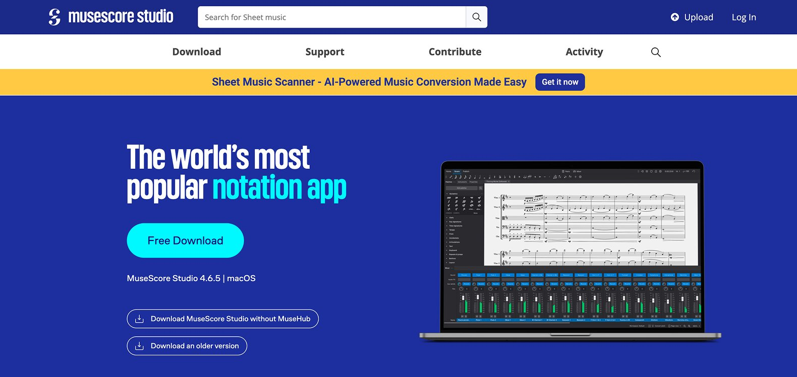
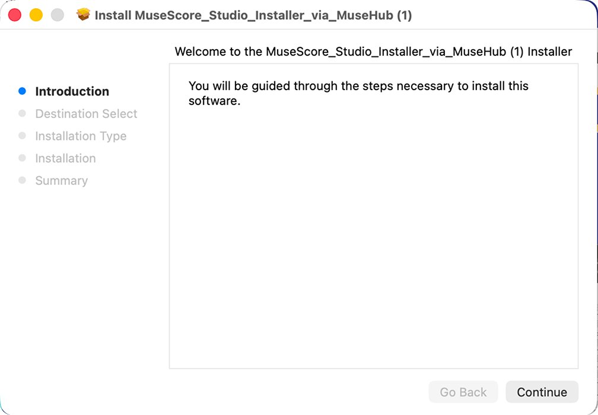
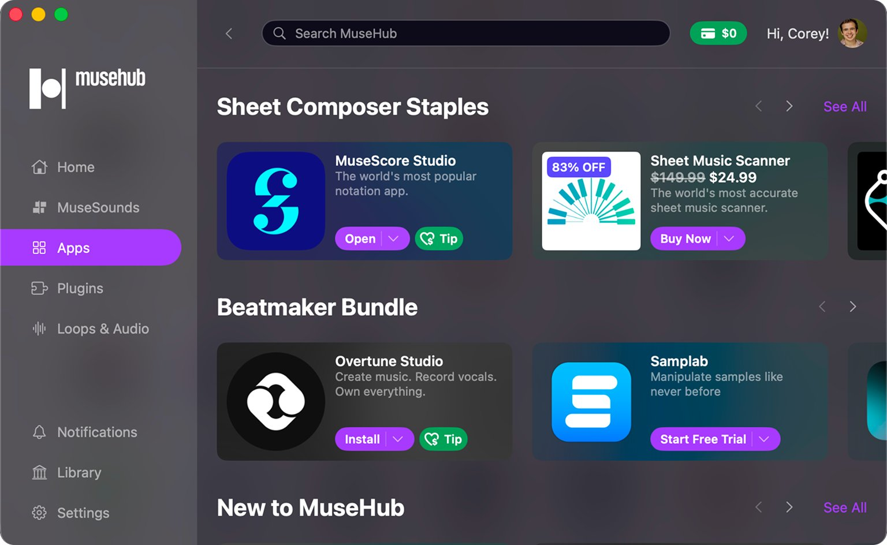

Download
Downloading MuseScore Studio is completely free and available for download on Windows, macOS, and Linux. The easiest way to download MuseScore Studio involves first downloading MuseHub.
Download MuseHub
- Visit MuseScore.org
- Click the ‘Free Download’ button. This will automatically download the most recent version of MuseHub for the operating system you are using.

- Double-click on the newly downloaded file. You will likely find the file in the ‘downloads’ folder of your computer.
- Follow the instructions in the dialogue box to download MuseHub to your applications folder.
With MuseHub now downloaded, you are ready to download MuseScore Studio!

Download MuseScore Studio (via MuseHub)
- Open MuseHub by double-clicking the MuseHub icon in your applications folder.
- Navigate to the ‘Apps’ tab on the left side.

- Locate the MuseScore Studio icon and click ‘install.’
- Once the download is complete, click the ‘open’ button beneath the MuseScore Studio icon.